검진 항목 정보
다양한 건강검진 항목에 대해 자세히 안내드립니다.
기초 검사(비조영제)
혈액 검사
소변 검사
안과 검사
체성분 검사
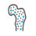골밀도 검사
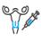자궁 경부암 검사(여성검사)
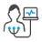심전도 검사
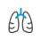폐기능 검사
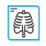흉부선 X선 검사

동맥경화 검사
위장 검사
위 내시경
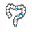대장 내시경
유방 촬영

유방암 검사 (여)
유방 초음파
복부 초음파
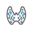갑상선 초음파
전립선 초음파 (남)
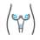골반(자궁) 초음파
경동맥 초음파
심장 초음파
뇌,폐,요추,경추 CT
심장석회화 CT
뇌 MRI
뇌,폐,요추,경추 MRI
뇌,MRI, (+MRA)(비조영제)
PET-CTTorso, +Brain
PET-CT
풍진검사

알레르기 검사
산화스트레스
생체나이
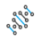유전체 분석
구강 검사
판독 및 상담
B형 간염 백신 접종
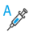A형 간염 백신 접종
자궁 경부암 백신
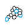폐렴(구균) 백신
M2-PK

얼리텍 검사
마스토체크
OAβ 검사
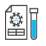코로나 항체 검사